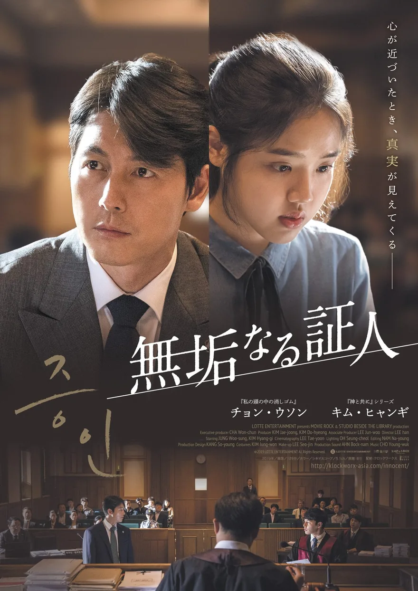
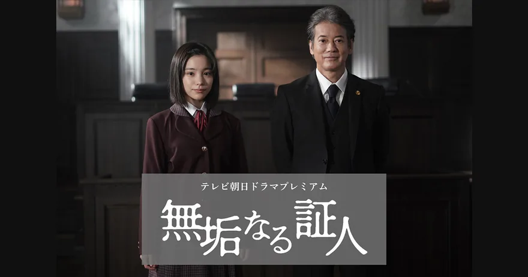

Search Intent
二つの版を一枚で見分ける
検索意図が混ざりやすい語だからこそ、まず媒体と年代を明示する。 そのうえで、人物関係と物語の温度を同じ平面に置くのがこのページの役割です。
- 2019年版はチョン・ウソン主演の韓国映画
- 2026年版は唐沢寿明主演のテレビ朝日ドラマプレミアム
- どちらもムン・ジウォン脚本の核を共有
Editorial Keyword Archive
2019年の韓国映画と、2026年4月18日放送のテレビ朝日ドラマ版。 同じキーワードの先にある二つの作品を、法廷・証言・無垢という共通テーマで整理する非公式ガイドです。
このサイトは公式運営ではありません。作品識別のために公式公開素材を最小限引用し、出典を明記しています。
Search Intent
検索意図が混ざりやすい語だからこそ、まず媒体と年代を明示する。 そのうえで、人物関係と物語の温度を同じ平面に置くのがこのページの役割です。


Version Compare
映画版は韓国の法廷ドラマとして、ドラマ版は日本の単発ドラマとして展開。 どちらも、弁護士が“証言を取る相手”としてではなく“ひとりの人間”として証人を見るようになる過程が中心にあります。
Motifs
版が違っても、緊張が生まれる場所は似ています。 法廷に入る前の距離、言葉が届かない瞬間、そして“勝つため”の視点がほどけていく変化です。
01
事実の整理だけでは足りず、証人の呼吸や沈黙まで受け止めないと真実に触れられない。 そのもどかしさがタイトルの緊張を作ります。
02
裁判は事件を言語化しようとしますが、作品はその外側にある日常の時間を大事にする。 だから両版とも、法廷劇でありながら静かなヒューマンドラマになります。
03
“何も知らない”という意味ではなく、損得や慣習で濁っていない視点として無垢が置かれている。 弁護士側の変化は、常にそこへ照り返されます。
韓国映画版が公開。観客動員230万人超のヒットとして広く認知。
脚本家ムン・ジウォン作品への注目が高まり、原点作として再注目。
テレビ朝日が日本で初ドラマ化。4月18日(土)に単発ドラマとして放送。
Characters
作品名だけでは混ざりやすいので、検索結果から飛んできたときに最初に見分けやすい人物名を並べています。
Film Ensemble
事件の弁護を担当する弁護士。勝ち筋を追う姿勢が、ジウとの接触で変化していく。
事件の唯一の目撃者。彼女の見方そのものが、弁護の前提を揺らす。
法廷の硬さと、生活の具体性を支える重要なレイヤー。
Drama Ensemble
大手法律事務所で企業側に立つ弁護士。希美と向き合うなかで姿勢がほぐれていく。
事件の唯一の目撃者。長谷部が“証人”ではなく“ひとりの人”として見るべき存在。
法廷の圧力、家族の距離、職業的な論理をそれぞれ担う配置。
FAQ
完全に同一ではありません。骨格となる関係性とテーマは共有しますが、媒体の違いに合わせて人物名や舞台設定が変わっています。
チョン・ウソン / キム・ヒャンギなら映画版、唐沢寿明 / 當真あみならドラマ版、と覚えるのが一番早いです。
いいえ。視聴や配信を直接提供するページではなく、作品情報と公式リンクを整理するための静的な編集ページです。
タイトルが同一で検索意図が重なりやすいため、識別目的で最小限の公式ビジュアルだけを引用しています。権利表記と出典は下部にまとめています。
References
Policy
ブランドロゴ、favicon、ソーシャルカードは本サイトのために独自制作したものです。 映画版とドラマ版のポスターは作品を識別するための引用であり、権利はそれぞれの権利者に帰属します。
作品の一次情報は必ず各公式ページで確認してください。ここでは検索時の混線をほどくことを主目的にしています。